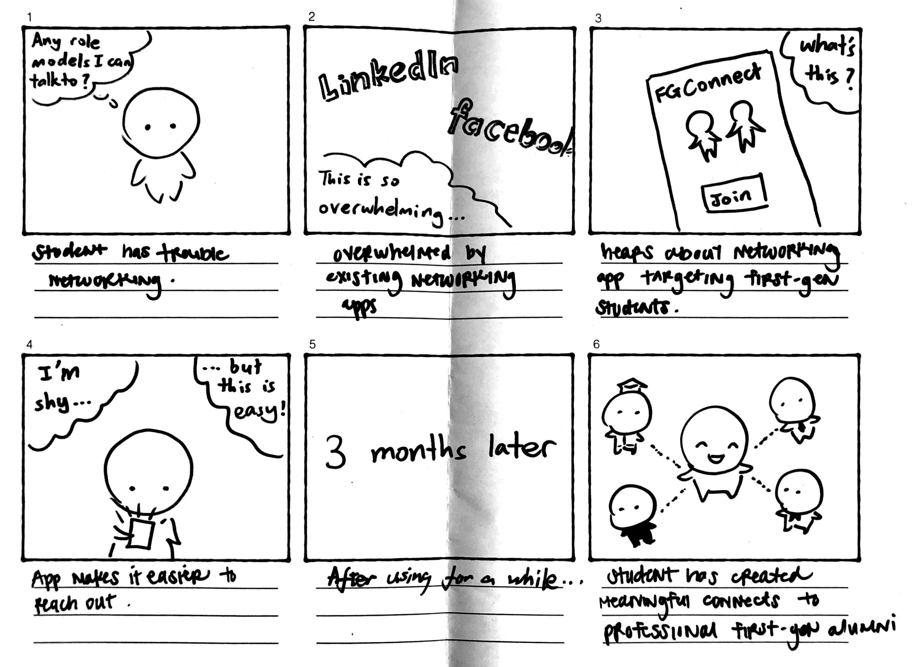

Overview
As "pioneers" in their own right, first generation college students often face unique challenges in their college lives. Through an iterative user-centered design process, I designed, prototyped, and tested Pioneers, a mobile app that helps first-gen students to network with and seek mentorship from first-gen alumni and upperclassmen.
Process

- Starting out with a general problem statement, we explored the problem space and conducted user research to gain a general understanding of our users.
- Through extensive discussion and brainstorming, we narrowed down our scope to specific problems that we were confident of tackling within our limitations.
- We iteratively designed prototypes of increasing fidelity and user testing in between.
The Problem Space

First-gen students, comprising 30% of college students in the United States, often face greater challenges in certain areas compared to non-first gen students. For example, they are disproportionately from a low income background or socioeconomic class and graduate at lower rates. They are more likely than average to report feelings of inadequacy in their academic ability, social life and socioeconomic status.
How can we improve the overall experience of first-generation college students at Cornell?
Our initial general problem statement comprises multiple interconnected problems spanning different areas. To begin designing a solution, our team first had to narrow down the scope of our project.
User Research
We started by recruiting and interviewing 6 first-generation college students at Cornell and got them to talk about their college lives.

Insight 1: Role Models
Our interviewees expressed that it was motivating to see or interact with another first-gen student or alumni who was successful.
Insight 2: Not part of the club
Students often feel a sense of inconfidence when it comes to networking. They feel that they and their family don't have the same connections that other students do.
Insight 3: School Family Divide
There is a divide between school and family life. Students had problems communicating with their parents and other family members regarding college matters. There is an asynchrony between their parents' view of their college life and their own.
Brainstorming


We thought that having a glimpse of the solution space would help us narrow down the problem space that we want to target. Our goal was to design something that would be the most useful given our limited time and resources. In response to the user research findings, each of us went crazy and sketched up 20 ideas, for a total of 120 sketches as a group.
After multiple group meetings, one idea emerged victorious: an app that helps with networking and mentorship. We chose this in response to the finding that role models were helpful and that networking felt difficult. We theorized that the knowledge gained from socializing and mentorship could also indirectly benefit other problem areas like feeling left out.
Narrower Problem Statement
First-generation college students at Cornell often feel left out in networking, socializing, and being "in the know". They find it difficult to network and connect with other students, both first-gen and non-first-gen.
Storyboards
To explore how the app might be used by a potential user and what it might look like, I sketched the following storyboards.
